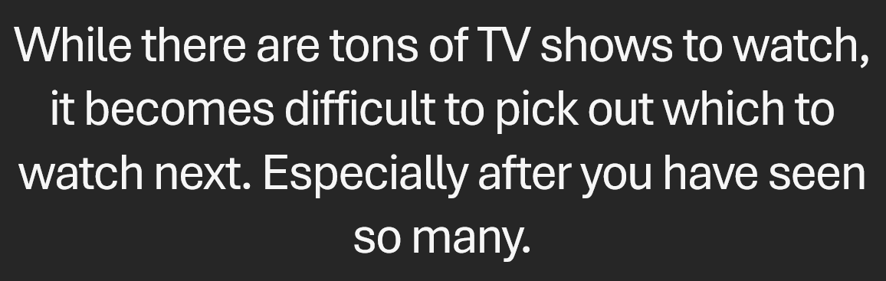
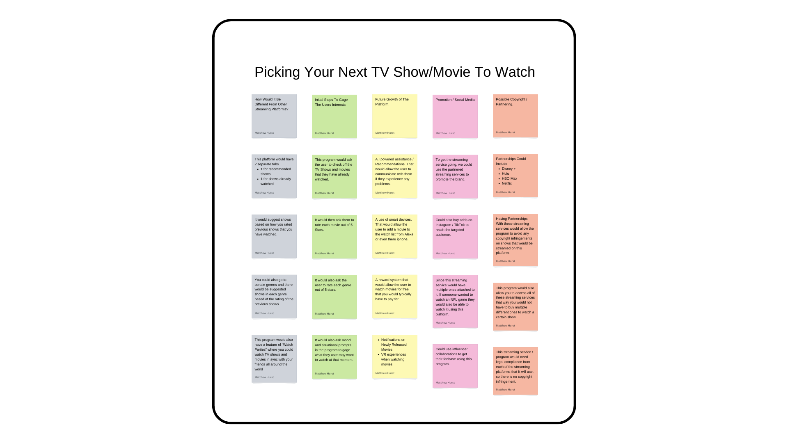
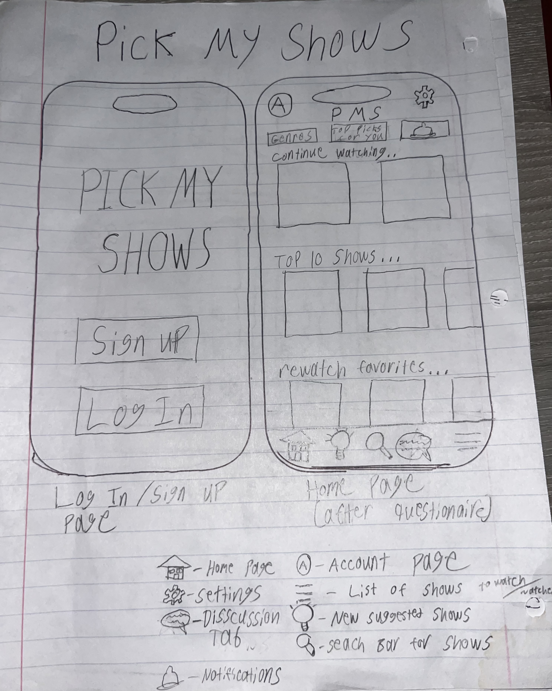

I am currently a Computer Science Student at The University of South Carolina.
I am very passionate about building new things using programming. My main focus
for when I get out of college is to develop program for Virtual Reality companies, and build
websites as a side hustle.
Problem Statement

While there are tons of TV shows to watch, it becomes difficult to pick out which to watch next. Especially after you have seen so many.
Affinity Diagram

Affinity diagram about a program that could change the way you pick out TV shows and Movies.
Sketches

This is an outline of the basics of how this app would operate.
Prototype

This prototype is a demonstration of how this app will function.